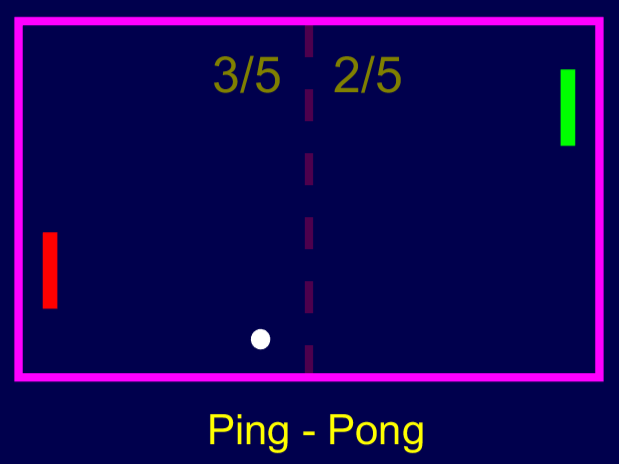

Tautvydas Adomaitis
About
- Išsilavinimas: vidurinis
- Studijos: „VilniusTech“ informacinės ir ryšių technologijos
- Gimtadienis: Gruodžio 5
- Amžius: 23
- Telefonas: +37061710049
- Paštas: tautvydas.adomaits@stud.vilniustech.lt
- Gyvenamoji vieta: Vilnius, Lietuva
Resume
Sumary
Esu 2 kurso studentas „VilniusTech“ universitete.
Studijuoju informacines ir ryšių technologijas.
- +37061710049
- tautvydas.adomaits@stud.vilniustech.lt
- Vilnius, Lietuva
Išsilavinimas
- Informacinių ir ryšių technologijų bakalauras2023 - 2024
„VilniusTech“ universitetas
- Vidurinis išsilavinimas2011 - 2019
Grigiškių „Šviesos“ gimnazija
Portfolio

Services